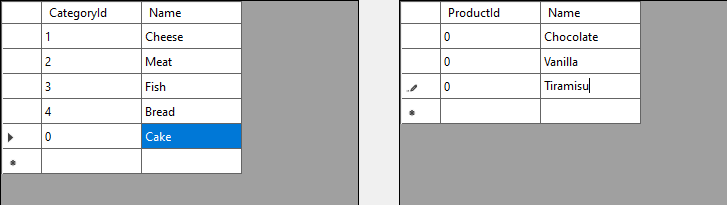
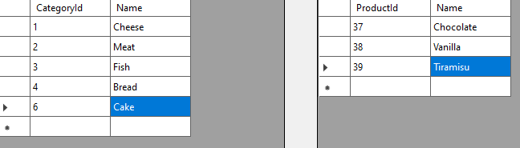

Tegemist on Windows Forms rakendusega, mis kasutab SQLite andmebaasi erinevate toodete hoiustamiseks. Rakenduses on võimalik jälgida erinevaid tootekategooriaid ning tooteid, mis võõrvõtme kaudu konkreetse kategooriaga seotud on.
Samuti on võimalik teha uusi sissekandeid nii kategooriate, kui toodete alla. Sissekandmise hetkel on uutel asjadel ID-ks 0, kuid peale salvestamist omandavad nad unikaalse ID. Samuti on võimalik olemite nimetusi (aga mitte ID-sid) muuta ning olemeid kustutada. Peale salvestamist ning rakenduse taaskäivitamist on tehtud muudatusi endiselt võimalik näha.

